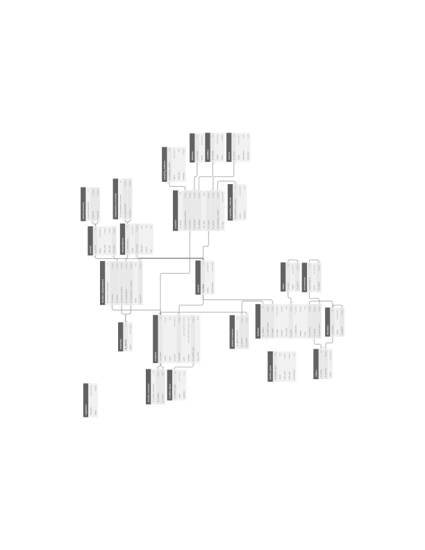

<!DOCTYPE html>
<html lang="en">
  <head>
    <meta charset="utf-8" />
    <meta name="viewport" content="width=device-width, initial-scale=1.0, maximum-scale=1.0, user-scalable=no" />

    <title>RHP User meeting</title>
    <link rel="shortcut icon" href="./../favicon.ico"/>
    <link rel="stylesheet" href="./../dist/reveal.css" />
    <link rel="stylesheet" href="./../dist/theme/white.css" id="theme" />
    <link rel="stylesheet" href="./../css/highlight/github.css" />

  </head>
  <body>
    <div class="reveal">
      <div class="slides"><section  data-markdown><script type="text/template">

# RHP User meeting

<br>

Niels Wouda

06-01-2021

<br>

<small>Speaker notes can be accessed via the `s` key</small>

<aside class="notes"><p>This window contains the speaker notes, per slide (some slides do not have notes).
Keep it open to read along!</p>
</aside></script></section><section  data-markdown><script type="text/template">
# This meeting

- Status update

- Queries
</script></section><section ><section data-markdown><script type="text/template">
# Status update
</script></section><section data-markdown><script type="text/template">
## Scope

- Pilot project

- Mostly focussed on:
  - Locations
  - Ceramic finds

<aside class="notes"><p>In particular, we have a lot about various locations (sites, subsites, and
units), and ceramic finds. Activities and non-ceramic finds are on the list
for later.</p>
</aside></script></section><section data-markdown><script type="text/template">
## Schema



<!--- This is a huge hack but ensures reveal-md actually copies the svg file -->
<!---  --->

<aside class="notes"><p>Same as with the technical presentation on 4/1/21.</p>
</aside></script></section><section data-markdown><script type="text/template">
## Soon in the database

- Ceramic shapes
- Ceramic functions
- Provenances/productions

<aside class="notes"><p>These lists are (almost) all complete, but I have not yet implemented them
(TODO 4/1/2021). I want to do so later this month.</p>
</aside></script></section><section data-markdown><script type="text/template">
## For later (with new funding)

Content:
- Coarse ware typology
- Methodology: sampling method, land use, sources (all part of activities)
- (various details of) non-ceramics
- Ceramics: fragment types, fabrics, decorations (?)

Tooling:
- Graphical interface

<aside class="notes"><p>This somewhat complements the discussion about the database schema, since in 
part the schema will need to be updated to accommodate these. Here I want to
present a list of content that we have not (yet) standardised, and is as such
not in the RHPdb.</p>
</aside></script></section></section><section ><section data-markdown><script type="text/template">
# Example queries

(finally!)
</script></section><section data-markdown><script type="text/template">
## Set-up

- Does everyone have the tools installed?

- Has everyone had time to look at an SQL tutorial? 

- Database location and credentials

<aside class="notes"><p>All this uses SQL, which is why I had you install some tools (DataGrip, and a 
GIS). Has everyone got that set-up?</p>
<p>SQL is important, and the way you will want to get data from the database
for further post-processing in Excel/Python/GIS/some other tool. This will get
us quite a bit of <em>raw</em> data.</p>
<p>Credentials: in chat, temporary for this session. Will change once we host it
permanently on the RUG servers.</p>
</aside></script></section><section data-markdown><script type="text/template">
## Structure

- Query: sites, site types, and periods

- Spatial query: ceramic finds by ware/type

- If time permits: your questions/input

<aside class="notes"><p>Most of your example questions can be answered using variations on the queries
we develop first. Hopefully there is time to explore some of that.</p>
<p>We are going to develop the queries by slowly adding complexity. I will show
the general structure of the query and some examples, but feel free to explore
on your own as well during this session!</p>
</aside></script></section><section data-markdown><script type="text/template">
# Sites

- Let's first get all sites from the database:

```sql
-- Select all columns ('*' is a wildcard for all columns) from records in the
-- rhp.locations table where the location type is 'site'.
SELECT rhp.locations.*
FROM rhp.locations
         JOIN rhp.location_types
              ON locations.id_location_type = location_types.id_location_type
-- Filter by location type. Other options are 'unit', or 'subsite'.
WHERE location_types.name = 'site';
``` 

(should return 6,687 records)

<aside class="notes"><p>Trace the lines in the schema.</p>
<p>This is all fairly straightforward: get all locations where location type is 
site. You can also filter by project (<code>id_project</code>, join with the <code>projects</code> 
table), or try different location types. See the <code>location_types</code> and <code>projects</code>
table for options!</p>
</aside></script></section><section data-markdown><script type="text/template">
# Query by site interpretation

- Let's get every site that has a habitation role. This is a little more complicated:

```sql
-- Selects all site data (see previous slide) where the site has a habitation
-- function in some period(s).
SELECT rhp.locations.*
FROM rhp.locations
         JOIN rhp.location_types
              ON locations.id_location_type = location_types.id_location_type
         JOIN rhp.location_interpretations
              ON locations.id_location = location_interpretations.id_location
-- Filter by location type ('site') and site type (something 'Habitation'). 
WHERE location_types.name = 'site'
-- The bit below selects all interpretations (by their ID) that have an RHP 
-- 'Habitation' hyper class (parent). This is known as a 'recursive subquery'
-- in SQL jargon.
  AND location_interpretations.id_interpretation IN (
    WITH RECURSIVE tree AS (
        (
            SELECT interpretation_hierarchy.id_interpretation
            FROM rhp.interpretation_hierarchy
                     JOIN rhp.interpretations
                          ON interpretation_hierarchy.id_parent = interpretations.id_interpretation
            WHERE interpretations.name = 'Habitation'
              and interpretations.id_project = 1 -- RHP project ID
        )
        UNION ALL
        (
            SELECT ih.id_interpretation
            FROM rhp.interpretation_hierarchy ih
                     JOIN tree ON ih.id_parent = tree.id_interpretation
        )
    )
    SELECT *
    FROM tree
);
```

(should return 14,412 records)

<aside class="notes"><p>Explain FROM/JOIN by tracing lines in the schema. Explain subquery by looking
at the <code>interpretation_hierarchy</code> table.</p>
<p>Something&#39;s wrong here. The count is bigger than the one in the previous slide.
Did we get more results all of a sudden? Are we making a mistake? </p>
<p>Show duplication in query results!</p>
<p><em>Yes</em>, we are: <code>locations</code> to <code>location_interpretations</code> is a one-to-many
relationship. The <code>JOIN</code> we do results in multiple records for each site, so
we need to filter then away with <code>DISTINCT</code>. That results in 3,279 sites, which
is more like we expected.</p>
<p>Also try <code>Urban settlement</code> here, and link back to original projects (i.e. 
query original data by <code>id_origin</code>).</p>
</aside></script></section><section data-markdown><script type="text/template">
# Query by time and certainty

- The following query gets all sites that were plausibly in use between
  200BC and 200AD:
  
```sql
-- This query selects all sites that are plausibly (probably + certain) in use
-- between 200BC and 200AD.
SELECT DISTINCT rhp.locations.*
FROM rhp.locations
         JOIN rhp.location_types
              ON locations.id_location_type = location_types.id_location_type
         JOIN rhp.location_interpretations
              ON locations.id_location = location_interpretations.id_location
         JOIN rhp.periods
              ON location_interpretations.id_period = periods.id_period
         JOIN rhp.certainties
              ON location_interpretations.id_period_certainty = certainties.id_certainty
WHERE location_types.name = 'site'
  AND certainties.name IN ('probable', 'certain')
  AND periods.start_year < 200  -- what does this construct do?
  AND periods.end_year > -200;
```

(should return 5,072 records)

**Extensions:**

- You can combine this with the query of the previous slide - what would that return?
- Here we filter on period certainty. What about interpretation certainty?

<aside class="notes"><p>The <code>periods.start_year &lt; 200</code> and <code>periods.end_year &gt; -200</code> test for overlap in
the time period. (maybe draw?)</p>
<p>Extensions:</p>
<p>The first would get all inhabited sites between 200BC and 200AD.</p>
<p>The second requires another join, like so:</p>
<pre><code class="language-sql">JOIN rhp.certainties AS int_cert
    ON location_interpretations.id_interpretation_certainty = int_cert.id_certainty</code></pre>
<p>Note the use of an ALIAS (<code>AS int_cert</code>) - the same is needed for the period join.
This results in, for example, the following query:</p>
<pre><code class="language-sql">SELECT DISTINCT rhp.locations.*
FROM rhp.locations
         JOIN rhp.location_types
              ON locations.id_location_type = location_types.id_location_type
         JOIN rhp.location_interpretations
              ON locations.id_location = location_interpretations.id_location
         JOIN rhp.periods
              ON location_interpretations.id_period = periods.id_period
         JOIN rhp.certainties AS per_cert
              ON location_interpretations.id_period_certainty = per_cert.id_certainty
         JOIN rhp.certainties AS int_cert
             ON location_interpretations.id_interpretation_certainty = int_cert.id_certainty
WHERE location_types.name = &#39;site&#39;
  AND per_cert.name IN (&#39;probable&#39;, &#39;certain&#39;)
  AND int_cert.name IN (&#39;probable&#39;, &#39;certain&#39;)
  AND periods.start_year &lt; 200
  AND periods.end_year &gt; -200;</code></pre>
<p>(returns 3,706 records)</p>
</aside></script></section><section data-markdown><script type="text/template">
# Artefacts (spatial)

- Let us first get all diagnostic artefacts on sites:

```sql
-- Selects all diagnostic artefacts found on sites.
SELECT rhp.artefacts.*
FROM rhp.artefacts
         JOIN rhp.artefact_locations
              ON artefacts.id_artefact = artefact_locations.id_artefact
         JOIN rhp.locations
              ON artefact_locations.id_location = locations.id_location
         JOIN rhp.location_types
              ON locations.id_location_type = location_types.id_location_type
WHERE location_types.name = 'site'
  AND artefacts.is_diagnostic = TRUE;
```

(returns 67,898 records)

<aside class="notes"><p><strong>FROM HERE ON, OPEN QGIS AS WELL</strong></p>
<p>There is nothing spatial about this yet, but now we do have a link through the
<code>locations</code> table, so we can add that in quickly.</p>
<p>The table <code>artefact_locations</code> encodes a many (artefacts) to one (locations)
relationship. Since we come from the artefacts side in this query (we start
with artefacts), this does not need special treatment with e.g. <code>DISTINCT</code>.</p>
</aside></script></section><section data-markdown><script type="text/template">
# Count finds per site

- Number of diagnostic artefacts per site, and site information:

```sql
-- Counts (sums) the number of diagnostic artefacts found per site. Also
-- retrieves location data (again via a wildcard).  
SELECT rhp.locations.*, SUM(rhp.artefacts.number) AS sherd_count
FROM rhp.artefacts
         JOIN rhp.artefact_locations
              ON artefacts.id_artefact = artefact_locations.id_artefact
         JOIN rhp.locations
              ON artefact_locations.id_location = locations.id_location
         JOIN rhp.location_types
              ON locations.id_location_type = location_types.id_location_type
WHERE location_types.name = 'site'
  AND artefacts.is_diagnostic = TRUE
GROUP BY locations.id_location;
```

(returns 2,749 records)

<aside class="notes"><p>What&#39;s new here are <code>ALIAS</code> (maybe) and <code>GROUP BY</code>, and aggregations.</p>
</aside></script></section><section data-markdown><script type="text/template">
## Finds per site, of certain ware

- For general coarse wares, and more specific coarse ware types:

```sql
-- Counts (sums) the number of diagnostic coarse ware artefacts found per site.
SELECT rhp.locations.*, SUM(rhp.artefacts.number) AS sherd_count
FROM rhp.artefacts
         JOIN rhp.artefact_locations
              ON artefacts.id_artefact = artefact_locations.id_artefact
         JOIN rhp.locations
              ON artefact_locations.id_location = locations.id_location
         JOIN rhp.location_types
              ON locations.id_location_type = location_types.id_location_type
         JOIN rhp.wares
              ON artefacts.id_ware = wares.id_ware
WHERE location_types.name = 'site'
  AND artefacts.is_diagnostic = TRUE
  AND artefacts.id_ware in (
    WITH RECURSIVE tree AS (
        (
            SELECT wares.id_ware
            FROM rhp.wares
            WHERE wares.name = 'Coarse ware'
        )
        UNION ALL
        (
            SELECT wares.id_ware
            FROM rhp.wares
            JOIN tree ON tree.id_ware = wares.id_parent
        )
    )
    SELECT *
    FROM tree
)
GROUP BY locations.id_location;
```

(returns 2,493 records)

<aside class="notes"><p>Show wares table and hierarchy. Also simplify query when only selecting one
ware (<strong>&#39;African red slip&#39;</strong>), not hierarchy.</p>
<p>I re-used the recursive subquery here since we already discussed it, but there
is a simpler way to write this (but it does involve some duplication)!</p>
</aside></script></section><section data-markdown><script type="text/template">
## Finds per site, with type

- This would get all sites where a `Hayes 23a` artefact has been found:

```sql
-- Counts (sums) the number of diagnostic coarse ware artefacts found per site.
SELECT rhp.locations.*, SUM(rhp.artefacts.number) AS sherd_count
FROM rhp.artefacts
         JOIN rhp.artefact_locations
              ON artefacts.id_artefact = artefact_locations.id_artefact
         JOIN rhp.artefact_types
              ON artefacts.id_artefact_type = artefact_types.id_artefact_type
         JOIN rhp.locations
              ON artefact_locations.id_location = locations.id_location
         JOIN rhp.location_types
              ON locations.id_location_type = location_types.id_location_type
WHERE location_types.name = 'site'
  AND artefacts.is_diagnostic = TRUE
  AND artefact_types.name = 'Hayes 23a'
GROUP BY locations.id_location;
```

(should return 29 records)

<aside class="notes"><p>Also try <code>Hayes 23b</code>, and <code>Hayes 23%</code> (<code>LIKE</code>).</p>
</aside></script></section></section><section  data-markdown><script type="text/template">
# Your input

(if time permits)
</script></section><section  data-markdown><script type="text/template">
# Questions?
</script></section><section  data-markdown><script type="text/template">
# That's all, folks!

- These slides are all online, so you can (re-)read them later.
 
- To facilitate re-use, there are a lot of (speaker) notes in the presentation.

- Anything unclear? Mail me at [nielswouda@gmail.com](mailto:nielswouda@gmail.com), 
  or contact me through the GitHub repository. </script></section></div>
    </div>

    <script src="./../dist/reveal.js"></script>

    <script src="./../plugin/markdown/markdown.js"></script>
    <script src="./../plugin/highlight/highlight.js"></script>
    <script src="./../plugin/zoom/zoom.js"></script>
    <script src="./../plugin/notes/notes.js"></script>
    <script src="./../plugin/math/math.js"></script>
    <script>
      function extend() {
        var target = {};
        for (var i = 0; i < arguments.length; i++) {
          var source = arguments[i];
          for (var key in source) {
            if (source.hasOwnProperty(key)) {
              target[key] = source[key];
            }
          }
        }
        return target;
      }

      // default options to init reveal.js
      var defaultOptions = {
        controls: true,
        progress: true,
        history: true,
        center: true,
        transition: 'default', // none/fade/slide/convex/concave/zoom
        plugins: [
          RevealMarkdown,
          RevealHighlight,
          RevealZoom,
          RevealNotes,
          RevealMath
        ]
      };

      // options from URL query string
      var queryOptions = Reveal().getQueryHash() || {};

      var options = extend(defaultOptions, {"width":1600,"height":1050,"transition":"slide","slideNumber":"c","chalkboard":{"grid":false,"theme":"whiteboard","toggleChalkboardButton":false,"toggleNotesButton":false},"menu":{"numbers":"c","markers":false,"hideMissingTitles":true},"math":{"Tex":{"jax":["input/TeX","output/SVG"]}}}, queryOptions);
    </script>

    <script src="./../_assets/plugin/chalkboard/plugin.js"></script>
    <script src="./../_assets/plugin/menu/menu.js"></script>
    <script src="./../_assets/plugin/plugin.js"></script>

    <script>
      Reveal.initialize(options);
    </script>
  </body>
</html>
